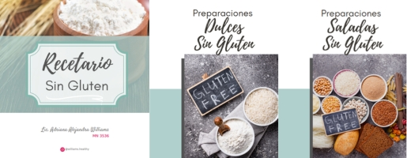

Nuestros Recetarios Prácticos

Recetario Sin Gluten: Deliciosas Recetas dulces y saladas
- ✅ Más de 20 recetas saladas y dulces sin TACC.
- ✅ Guía completa sobre harinas y aditivos sin gluten.
- ✅ Consejos para panificación y conservación de alimentos sin gluten.
- ✅ 40 páginas con información de calidad.
$8.000 ARS
Lo quiero
Recetario: Cenas Ligeras
- Recetas nutritivas para la noche
- Fáciles de preparar
- Ingredientes accesibles
$3.800 ARS
Lo quiero